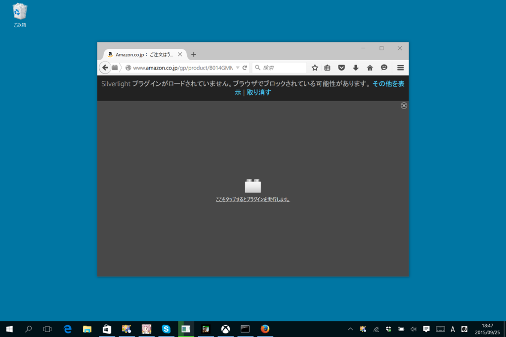
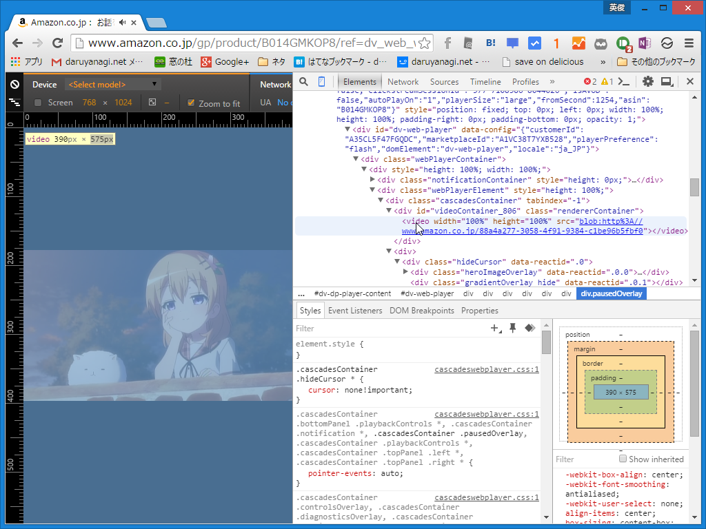
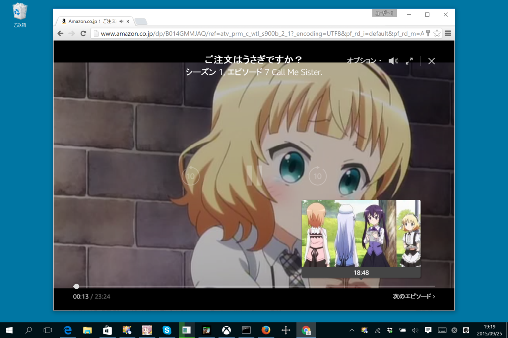
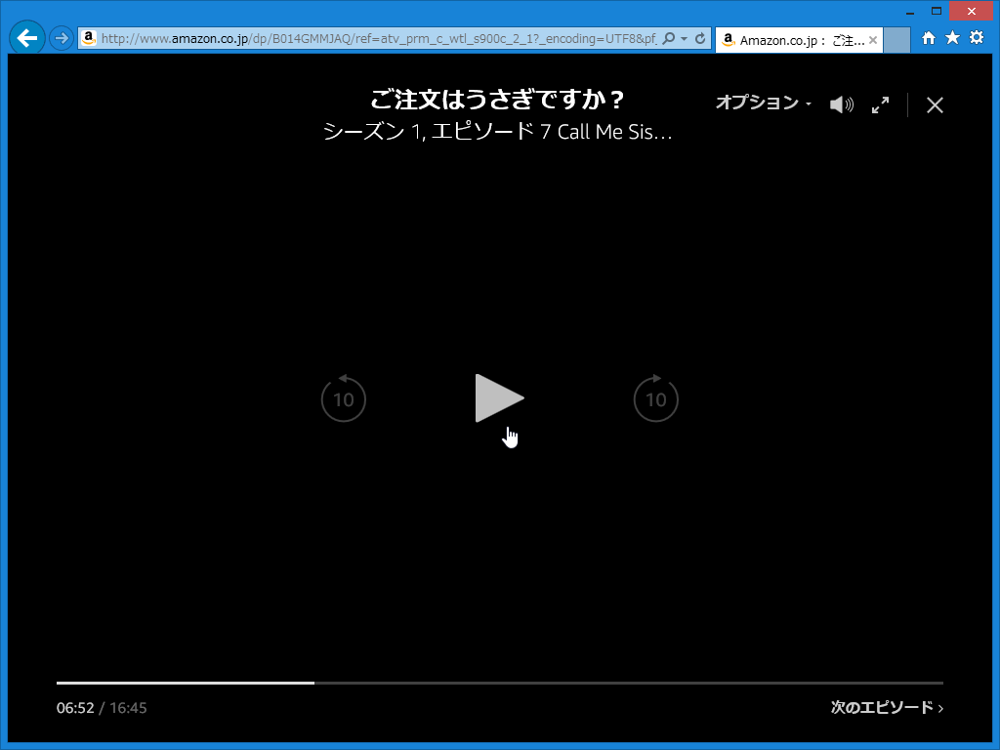
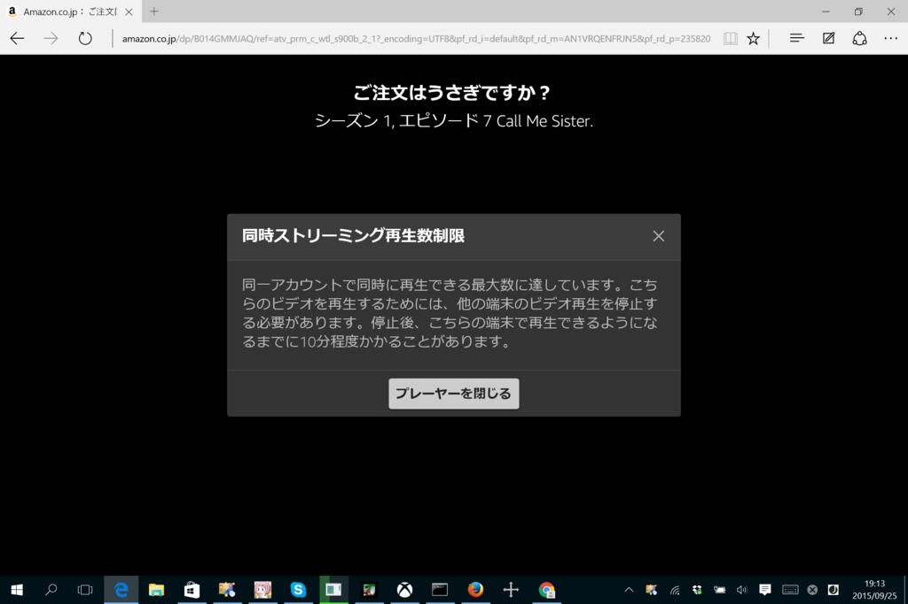

Amazon のプライム・ビデオがきたのでさっそく観てみた。
執筆日時：

Amazon プライムの会員なら見放題の「プライム・ビデオ」が利用できるようになっていたので、さっそく「Firefox」で鑑賞してみた……ら Silverlight を使っててちょっと笑った。著作権保護周りでの理由なのかな？ こんなところで Silverlight を見るとは思わなかった。
“Click to Play”でコンテンツがブロックされるが、クリックして解除すれば動画の再生は可能。許可サイトに入れておかないと、次の動画を自動で再生できないみたい。まぁ、「天下の Amazon だし、マズいことになならないだろう」と思うならば、常に再生するようにしておいてもよいかも。

「Google Chrome」は、普通に“video”要素で再生していた。

Silverlight のプレーヤーと違ってシークバーでシーンをプレビューできるのがカッチョいい。

「Internet Explorer」「Microsoft Edge」の場合も「Google Chrome」と同様“video”要素で再生されるが、なぜかビデオのスクリーンショットが撮れない。
ラインナップの充実度は……正直まだよくわからないが、とりあえず『ごちうさ』が見れたので満足。海外ドラマだったら Hulu の方が充実しているかもだけど、そういうのを見ないならば解約しちゃってもいいかなぁ、なんて思い始めた（Netflix はクレカ情報入力するのが面倒でまだ観てない）。
おまけ

遊び過ぎた。